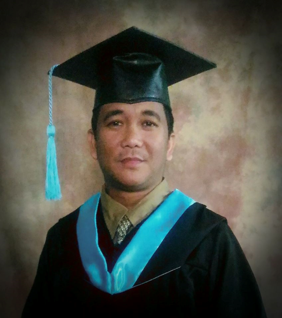

|  |
Cemee Faith M. EscarillaInstructor | Trainor | Artist |
|
|
| March 2017 | BSED Major in Math | Oxfordian College, Cavite |
| March 1999 | Bachelor of Theology | Foursquare Bible College, QC |
| April-May 2022 | Advanced Front-End Web Development | Bayan Academy, Quezon City |
| September 2021 | Beginner to Advance Premier Pro | Graphics Media Training Phil. |
| January 2019 | Basic to Advance Hands-on Workshop in Adobe Photoshop | Manila Intenational Academy-Manila |
| August - October 2018 | Trainers Methodology 1 | Manila Intenational Academy-Manila |
| May - July 2018 | Visual Graphic Design | Careerbox Training Center - Cavite |
| April 2016 | Computer System Servicing NCII | CNCTC - Manila |
| April 2016 | Computer Hardware Servicing NCII | ACTMA Cavite |
| March 2014 | AutoCADD | Microcadd Institute Inc. - Bacoor |
| April 2012 | Computer Hardware Servicing | The Bestech Cavite |
| October 2009 | Website Design | Informatics Cavite |
| July 2019-Present | Faculty-SHS Dept. | Unida Christian Colleges - Imu, Cavite |
| June 2016-June 2019 | Faculty / IT Coor. | Mater Christe Academy Inc. Cavite |
| June 2012-June 2016 | Account Officer | JIMRAES Furniture World - Cavite |
| February 2011-February 2012 | Account Officer | CCT Credit Cooperative, Cavite |
| October 2008-Ocotober 2010 | Account Officer | TSPI Development Corp., Manila |
| February 2004-March 2008 | Loan Clerk/Prog. Assistant | Gintong Gabay Finance Corp., Cavite |
Operating System Familiarity:
Windows Operarting System, Linus OS
Word Processing:
MS-Word, PDF
Spreadsheet:
Ms Excel
Web.Dev/Graphics:
Photoshop, Dreamweaver, Animate, MS Powerpoint,
MS Publisher, Joomla, HTML, JavaSCript, CSS
Others:
Hardware and Software trouble Shooting
Assemble Computer
Local Area Network Set-up
Address:
Langkaan 2, City of Dasmarinas, Cavite
Contact Number:
0930-197 5456
Social Media:
facebook.com/cemeefaith
E-mail:
cemeefaith2014@gmail.com
| Age: | 40 |
| Birthday | April 17, 1978 |
| Sex | Male |
| Marital Status | married |
| Health | Excellent |